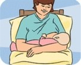
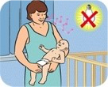
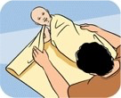
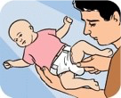
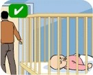
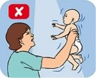
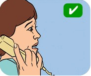

Crying and settling
It is normal for babies to cry - this is how they communicate!
Young babies tend to cry for around 2-3 hours a day (this usually peaks by about 6 weeks) and by the time they are 3-4 months old, most babies generally cry much less.
In this section:
- Crying baby checklist
- Ways to manage crying and settle your baby
- What to do if the crying is getting too much
Crying baby checklist
There are many reasons why your baby may cry - hunger is only one of them! And although it's tempting to always soothe your baby's crying by feeding, it's worth going through a checklist to try to work out if your baby actually is hungry, or if something else might be causing the crying.
This video goes through a checklist of common things that can upset babies and cause them to cry, as well as some tips on settling.
Video: How to settle a crying baby
Sourced from the Raising Children website, Australia's trusted parenting website. For more parenting information, visit raisingchildren.net.au.
You might find it helpful to go through the below questions to work out the cause of your baby's crying, which will then allow you to quickly help your baby to settle (and reduce your stress levels!).
Could your baby be hungry, upset or tired?
Is your baby hungry? 
Try offering your breast or a bottle if your baby is showing hungry signs
Does your baby need to be held?
 Try cradling your baby or putting them in a sling. Try gentle rocking, walking, whispering or singing and keep noise and light to a minimum.
Is your baby tired
 Try wrapping your baby gently but firmly, and putting them down to sleep in a safe place. Make the room darker and quieter to reduce stimulation. A relaxing bath or massage might also help.
Is your baby uncomfortable?
Could your baby have a wet or dirty nappy that needs changing?
 If your baby has a rash, rinse with clean water, gently pat dry and use a barrier cream to help soothe the area.
Does your baby need burping or are they uncomfortable?
Try holding your baby upright and patting their back. You should also check if they are too hot or cold and if their clothing seems comfortable.
Is your baby sick or could they have a fever?
Check your baby's temperature - an average temperature is 37℃. If you are worried, talk to your GP or maternal and child health nurse.
Adapted with permission from the Raising Children website, Australia's trusted parenting website.
Ways to manage crying - settling strategies
This video provides some helpful ideas for settling your baby.
Video: Settling strategies
Sourced from the Raising Children website, Australia's trusted parenting website. For more parenting information, visit raisingchildren.net.au.
Some strategies for managing your baby's crying
There are many ways to help manage your baby's crying. You might like to try:
- laying your baby face down across your lap or along your forearm - this helps place pressure on your baby's tummy which might help with wind
- bathing your baby - this helps them to relax
- putting on some calming music - this may help to relax both you and your baby
- using white noise such as sound of a fan, dishwasher, washing machine or dryer - this can actually be soothing
- changing your routine to fit around your baby - many babies cry in the late afternoon or evening (just when you need to cook dinner!) - it might be easier to cook dinner and do other chores in the morning or at times when your baby is more settled
- using a baby pouch - the movement can be soothing
- taking your baby for a walk in the pram - the change of scenery and fresh air will likely be relaxing for you too!
- going for a drive - many babies will sleep in the car, but don't get behind the wheel if you are tired or upset
- using a dummy - but keep in mind that there are pros and cons to using a dummy
Is the crying getting too much?
Never be scared to ask a friend or relative to come and help you at the times of the day your baby cries the most.
Are you feeling frustrated or upset?
 If it is getting too much, or you start feeling angry or upset, it's best to put your baby somewhere safe and take a 5 minute break. It won't hurt your baby to cry for a short time. Walk away and take a moment to calm yourself - take some deep breaths, you can do this!
Never ever shake your baby 
This can cause bleeding inside their brain and often permanent brain damage.
It's perfectly OK to ask for help!
 It's always OK to ask for help if you are worried about your baby's crying or it is getting too much for you! Your GP or maternal and child health nurse are good places to start but there are plenty of other useful contacts in our help and support section.
Adapted with permission from the Raising Children website, Australia's trusted parenting website.
Remember:
- being around a lot of noise or activity can make your baby unsettled
- sometimes babies will cry for no reason and this is also part of normal development!